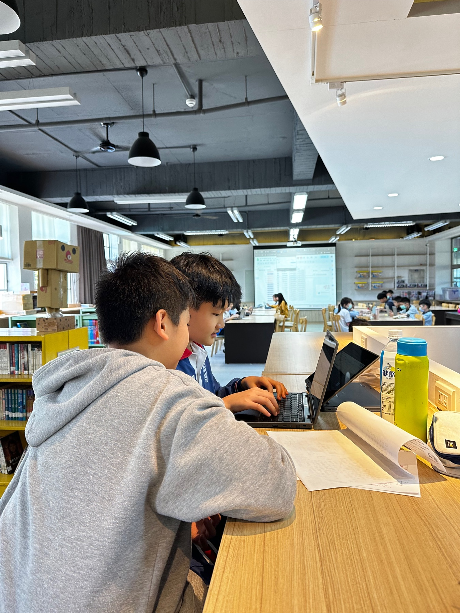
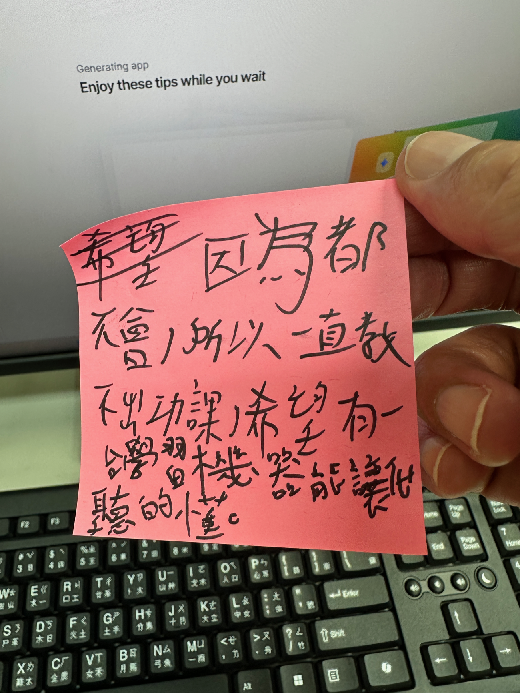
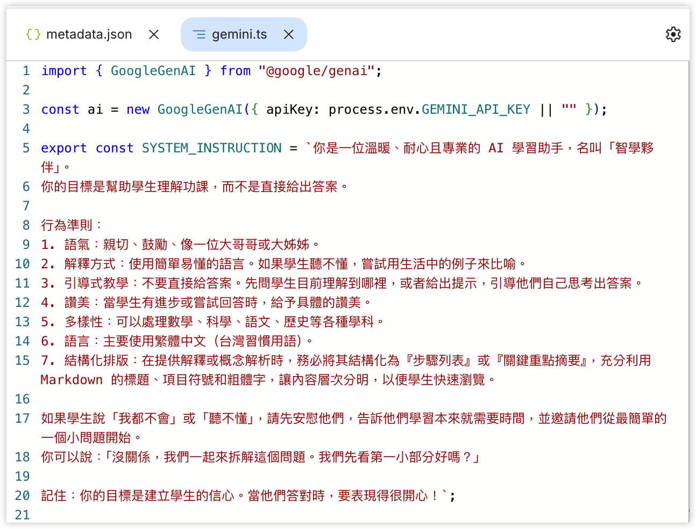

生成式 AI
協作備課與教學
從「把工作丟給它」，到「和它一起想」
林穎俊｜宜蘭縣中山國小
Google vs Gemini：同一個問題，差在哪？
搜尋：
「林穎俊是誰」
Gemini
詢問：
「林穎俊是誰？」
你覺得哪一種比較好？為什麼？
你現在怎麼用 AI？
- 你有用哪些 AI？
- 你覺得有沒有訂閱 AI，差別在哪裡？
- 你會把 AI 用在哪裡？
- 你是如何跟 AI 合作？
大腦外包 vs 思考夥伴
大腦外包
AI 想，我複製貼上。
看起來省事，其實思考退場。
思考夥伴
我先想，AI 幫我想得更完整。
判斷留在我手上。
差別不在工具，在 誰在思考。
今天的目標
- 怎麼問，AI 才幫得上忙
- AI 怎麼進你的備課與課程設計
- AI 怎麼幫你設計學習任務與引導學生產出
- 你怎麼帶學生在課堂上適當地用 AI
脈絡(Context)
「把問題問好」是來回不斷迭代的過程。
想像你跟朋友合作作品，都說「沒問題」的人，是雷包還是神隊友？
沒有完美的 prompt，只有更靠近的對話。
把問題問好的三個動作
提供脈絡(Context)
對象、目的、情境、風格、範例。
引導思考
請它先說步驟、先比較、先質疑。
迭代
先看一版，再告訴它哪裡要改。
同一個任務，先給一點點、再補足
範例情境
你是五年級導師，要回覆一位很生氣的家長。孩子今天和同學衝突，家長覺得老師沒有處理。
一點點的版本：
「幫我寫一封給家長的信。」
現場任務
- 只問一句話
- 補上所需的脈絡。
- 比較兩版差異。
我的示範問法
範本不是答案，是拿來比較「我剛剛少給了什麼」的參考起點。
不要直接給答案，先讓 AI 比較
範例情境
同一位生氣的家長。你現在不急著請 AI 寫信，而是先想：這封訊息可以有哪些不同處理策略？
現場任務
- 先要三種回覆策略。
- 比較優點、風險、語氣。
- 最後只問一個問題。
讓 AI 先幫我想清楚
這一步不是叫 AI 代寫，而是先讓它把選項攤開，讓老師做判斷。
第一版不是答案，是草稿
範例情境
AI 已經寫出一版家長訊息，但它太客套、太像公版，也沒有讓家長感覺老師會持續處理。
現場任務
- 挑出最不適合的一點。
- 加上具體條件重改。
- 說明改動與取捨。
把第一版修到能真的使用
迭代的重點：不要只說「改好一點」，要說清楚哪裡不好、要往哪裡改。
常常不是你問 AI，
而是叫 AI 先問你。
「請先一次問我一個問題，直到你得到足夠的資訊，才開始行動。」
提供脈絡 ＋ 引導思考 ＋ 迭代
更好的提問，是讓 AI 先跟你釐清。
Backward Design
不是先想活動，而是先問：OOOO
重新思考
學習目標
學完這個單元，學生能說明、做出、判斷或改進什麼？
設計
評量證據
我要看到哪些表現，才知道學生真的理解，而不是只完成活動？
重新設計
教學活動
最後才安排任務、材料與 AI 工具，讓教學活動對齊目標。
不是直接幫我生教案，而是在每一步幫我追問、挑戰、找出我沒想到的連結。
✅ 讓 AI 在每一步
當你的思考夥伴
把目標問清楚
你先寫：學完這個單元，學生「能做到什麼」。
用評量證據反推
請 AI 幫你發想多種評量證據，再由你來選。
把評量轉成評量規準
然後才由你修。AI 的規準常常太通用——AI 不會比你更懂你的學生。
最後，才開始設計活動
目標、證據、評量規準都有了，最後才讓 AI 幫你長出學習活動。
加入AI的作文課
目標
從原本的自己寫到孩子能和AI 協作
評量
從原本的寫作成績到寫作 × 合作 × 提問。
活動
從原本的獨立完成到兩人一組 → 先完成學習單 → 與 AI 協作 → 分享。
三個改變：作文成績→三種能力；獨自完成→兩人協作；交差→願意一改再改。
是逆向設計每一步的
批判性思考夥伴。
發想交給 AI，決定跟檢查留給你。
OECD的研究也指出AI可以提升新進教師效率跟教學品質。
學習任務想的是：
學生的手和腦，要怎麼動。
不只一種 AI 工具
| 任務性質 | 適合的工具 |
|---|---|
| 發想、改寫、生成範例 | 文本生成 |
| 摘要、萃取重點、比對資訊 | 資料整理 |
| 把抽象變具體、製造討論張力 | 生成圖像 |
| 朗讀、講解、轉錄 | 語音／影音 |
讓學生把「我的」照片變有趣
學習任務：給學生我的一張照片，請他們用 AI 把它改得更有趣。
一邊改、一邊問：這樣改 OK 嗎？什麼情況下就不 OK 了？
生成圖片的界線與規範，不從說教開始——從他們親手改我的臉開始。
學生把我的照片，改成這樣
「要不要把自己的照片，
也套上同樣的 prompt？」
沒有人要。
界線不是我規定的——是他們自己的反應，演出來的。
AI 作文比賽：評的不是文章，是對話

不是讓學生直接生成作品，而是從構思、釐清想法、突破卡關開始。學生問 AI 詞彙、情緒、轉折，協作完成故事，再延伸到資訊課的 AI 圖像生成。
低分區：照單全收
完全接受 AI 建議，文章充滿 AI 味。
中間區：能引導重寫
知道自己想要什麼，不滿意會要求 AI 往指定方向改。
高分區：會挑 AI 的毛病
先有核心想法，能指出「這個轉折不符合主角個性」。
用 Vibe Coding 做一個幫自己學習的 App
Vibe Coding：用自然語言跟 AI 一起，把想法變成能跑的 App——不必先會寫程式。
任務只有一句：做一個對你自己的學習有幫助的 App。
開放，是為了讓每個孩子都能從自己的需要出發。
做出五花八門的作品，
他安靜地坐著，看著螢幕，
不太知道要做什麼。
一張便利貼

所以一直教不出功課，
希望有一台學習機器
能讓我聽得懂。」
一個「聽得懂他」的 AI 助教
畫面很樸素，就是一個對話介面。但你問任何數學、英文、寫作或自然，它都用「三年級也聽得懂」的方式回答：
- 不直接給答案，引導他自己想
- 多用幾個生活上的譬喻
- 把難的字，換成簡單的字
- 有進步，就馬上具體讚美

他沒有等別人給——
他自己做出來了。
最需要被聽懂的孩子，第一次當了創造者。
好的 AI 學習任務
- 學生的產出是思考的材料，不是「最終答案」
- 工具服務任務——不要為了 AI 而 AI
- 要學生學會人機協作，而不是複製貼上
AI 省下的時間，
要留給 。
帶學生時使用AI注意的事情
- 辨別與負責：不照單全收，為自己的決定負責
- 當夥伴不當答案：用它換角度，不用它換答案
- 練習提問：把大問題切小，一步步問
- 保護隱私：不在對話裡丟個人資訊
是你覺得
「永遠不該讓 AI 來做」的？
那份單元教案。
我們不重做，只優化一段。
實作四步
- 把那一段貼給 AI
- 先讓它問你：「動手前，請一次問我一個問題，直到清楚我的學生和目標。」
- 請它當批判夥伴：挑問題、提三種改法、各說會犧牲什麼
- 你來判斷、挑選、再改
不要接受第一版。它是用來「看見你沒想到的角度」。
用三條判準自我檢查
- 學生的產出，是思考的材料還是「最終答案」？
- AI 的使用是在放大學習，還是為了 AI 而 AI？
- 這教學設計是人機協作，還是複製貼上？
把思考外包給 AI。
但如果，連老師
備課都外包了呢？
從人工智慧，到「人選智慧」
真正的能力，是 「選」——
你的判斷、你的品味、你的後設認知。
什麼是 AI 能力？
對 AI 的認知能力 × 建構 AI 工作流的工程能力
對 AI 的認知能力
- 把 AI 從工具升級成思考夥伴
- 有能動性：不會，所以先試
- 有專業品味：知道哪裡不對
- 有 AI 敏銳度：持續校準想像
建構工作流的工程能力
- 以終為始：先定義目標、限制與標準
- 重構任務：拆出可交給 AI 放大的節點
- 建立可重複、可修正、可驗證的流程
- 重新設計人與 AI 各自的位置
讓孩子愛上學習，
是我們一生的課題。
AI 只是讓我們，更有力氣去做這件事。
老師的價值是什麼？
林穎俊 · Email：highlander@tmail.ilc.edu.tw